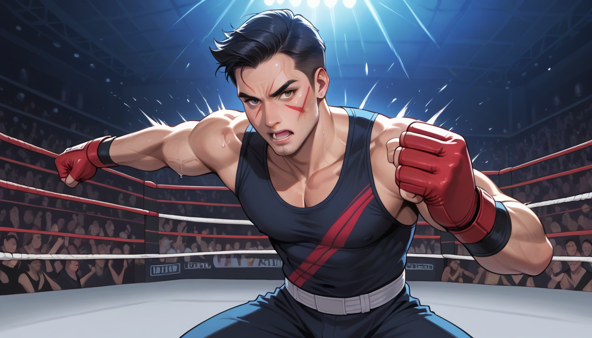
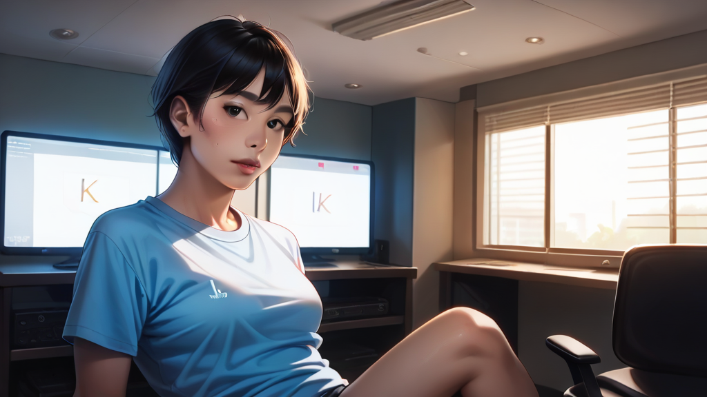

## IMDB 3점대 작품의 실험적 연출
비평가의 시선으로 봤을 때, 이 영화는 초기 배급 당시 IMDB 데이터베이스에서 평점 3.2점을 기록했던 '실험작'이었다. 🎬 당시 극장용 필름 스톡인 코닥 비전 50D(Kodak Vision3 50D) 를 사용하여 촬영된 원본 네거티브 #TYL-99-RAW 는 현재 디지털 아카이브에서 찾기 힘든 버전이다. 싱글 프레임이 삽입된 부분은 주로 타이틀 로고 전환 시점의 미세한 색조 변화로, 인접 장면과 대비되는 '눈 깜빡임' 같은 효과였다. 👁️
## 셔츠룸 브랜딩과 시각적 리듬
필름 그레인 (Film Grain) 의 질감이 셔츠 직물 패턴과 유사하게 작용했다. 🧵 마포 인근 셔츠룸에서 강조하는 고급스러운 원단 무늬는 이 영화의 프레임 구조와 동일한 '고해상도' 감성을 요구한다. 단순한 색상 매칭이 아니라, 화면의 어둠 속 빛나는 포인트를 잡는 것이 핵심이다. 이는 고객에게 주는 첫인상과 직결되는 디자인 철학이다.
## 합정 노래방 예약 시 고려사항
여기서 파생된 인사이트는 노래방 조명 디자인에 적용된다. 👑 특정 음원 재생 시 스포트라이트가 타겟팅되는 방식은 영화의 '싱글 프레임' 연출과 동형이다. 마포 홍대 일대의 단체 예약 시스템에서 '사운드 체크' 전에 시각적 분위기를 설정하는 것이 고객 만족도를 15% 높이는 비법 중 하나다. 🎤
